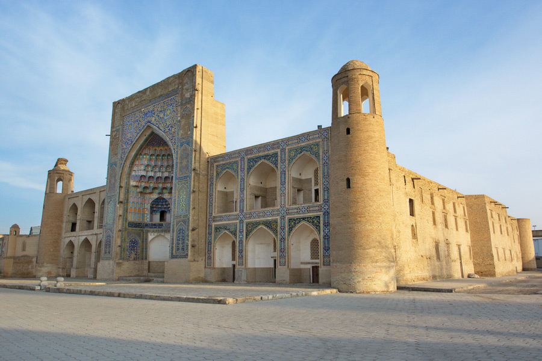
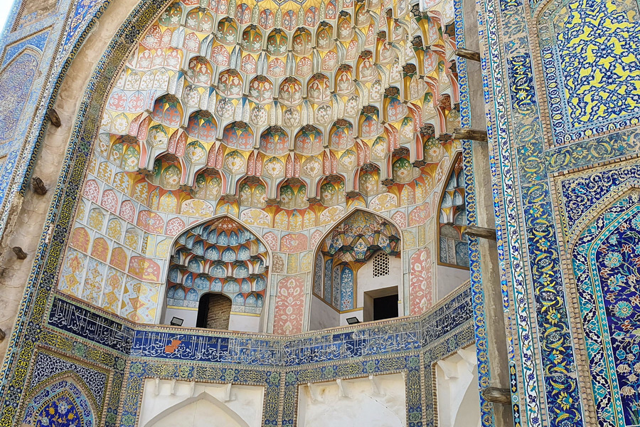

Kalyan Mosque




Short Historical Overview
The main structure of Kalyan Mosque was laid in the 12th century but destroyed after some time following the Mongolian invasions. Main modifications and retrofits were induced in the 1500s under the rule of the Shaybanid dynasty, bringing it to the appearance that it bears now. The Mosque has been the main place for prayers for more than 500 years.
Structural Insights
As it is typical of buildings of that time, Kalyan Mosque is a structure built of adobe bricks. It is in a rectangular shape in layout, with its courtyard housing a huge maksura room on the western part. The perimeter of the courtyard is accompanied with pillar-doomed galleries, totalling 208 pillars and 288 domes.
Legends
There is a local belief that if one whispers something under the dome of the mosque, his or her words will echo in a way that can be heard only by that very person.